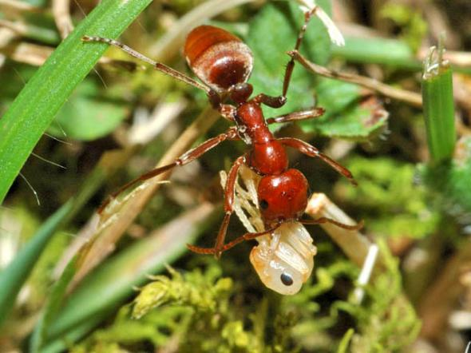
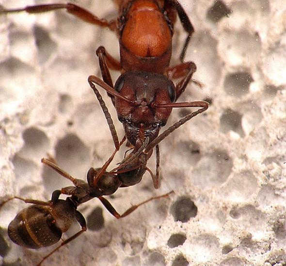
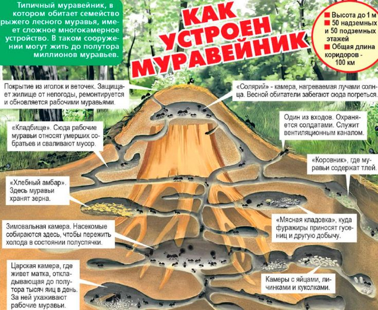

Войны муравьев — прямая агрессивная форма взаимодействия между муравьями из разных колоний. Муравьи вовлечены в конкуренцию друг с другом. К примеру, если одна из колоний присваивает себе источник еды, этот источник уже недоступен для других муравьев. Это — косвенная конкуренция. В контексте конкуренции муравьиные войны — форма конфликта, при которой муравьи напрямую вступают в схватки друг с другом. Интересно, что такие конфликты могут происходить как внутри одного вида, так и между видами.
Если рассматривать муравьев как общество, то есть два варианта вступления в так называемые войны. Один из них довольно близок к привычному для людей пониманию «войны», а именно схватки между колониями одного вида. Другой подразумевает взаимодействия между муравьями разных видов. И оба типа конфликтов интересны для биологии муравьев.
История исследований
О существовании муравьиных войн люди знали даже до того, как биологи всерьез заинтересовались этим феноменом. Например, о конфликтах между муравьями писал Чарльз Дарвин. Отсылки к успеху сообществ муравьев есть в Библии, так как люди интересовались наблюдениями этого феномена на протяжении тысяч лет. Отчасти муравьиные войны привлекали такое внимание, потому что столкновения между муравьями были драматичными и очевидными, но также потому, что муравьи — это такие же социальные существа, как и люди, поэтому сложно удержаться от проведения параллелей между нашими обществами. Интересно рассматривать историю этих сравнений как диалог: с одной стороны, интерес вызывал вопрос, может ли борьба между муравьями подкрепить уже существовавшие идеи или открыть новую сторону людских конфликтов; с другой — возможность применения по отношению к муравьям тех учений, которые мы разработали для понимания природы конфликтов среди муравьев.
Методы исследования
Муравьи — социальные насекомые. Как правило, в обществах насекомых колония действует как единое целое и в определенной степени сохраняет генетическую целостность. Другими словами, колонию скрепляет родственная структура, которая иногда бывает довольно запутанной. Внутри колонии вырабатывается способность выделять и узнавать каждого из ее членов. Муравьи склонны довольно просто делить мир на два класса: члены колонии и все остальные. Внутри колонии вырабатываются очень яркие отличительные черты, призванные объединять ее, по крайней мере, у большинства видов и при большинстве обстоятельств.
Муравьи часто сталкиваются с другими муравьями, особенно в тропиках. Недавнее исследование, проведенное в горах Аппалачи в США, показало, как плотно могут селиться муравьи. Исследователи собирали мертвых насекомых в лесу, оставляли их на земле и наблюдали за тем, сколько времени пройдет, прежде чем на пищу наткнется потенциальный хищник или консумент. Большинство этих кусочков еды находили муравьи, и им ни разу не потребовалось больше пары минут. В тех местах, где муравейники расположены ближе всего к земле, муравьи постоянно просматривают и патрулируют почву, практически не оставляя не тронутых в течение долгого времени участков.
Муравьи с большой вероятностью сталкиваются с членами других колоний и даже других видов. В местах обитания, занимаемых сразу многими видами, вероятность межвидового столкновения колоний крайне высока. Подобное взаимодействие происходит регулярно. Если колония понимает, что существует угроза потери ресурсов или территории со стороны как муравьев другого вида, так и муравьев из других колоний того же вида, за этой угрозой следует организованный агрессивный ответ, который иногда может вылиться в настоящее сражение.

Make Love Not War
Солдаты против кочевых муравьев
Солдаты — это особый тип муравьев, встречающийся в колониях некоторых видов. Они являются частью рабочей силы и специализируются на обороне. Не у всех видов муравьев есть солдаты, большинство ограничивается лишь одним типом рабочих особей. Но у остальных видов специализированные солдаты отличаются от простых рабочих увеличенными размерами тела и поведением. Если колонию атакуют, то именно солдаты принимают важнейшее участие в ее обороне.
Кочевые муравьи — это подсемейство муравьев, представители которого имеют несколько уникальных особенностей поведения. Они развили свои социальные навыки сильнее, чем любая другая группа социальных насекомых или даже любой другой вид известных нам животных. Кочевые муравьи интересны благодаря их особенности совершать все действия сообща. Любая деятельность осуществляется в тесном взаимодействии больших групп отдельных особей. Они не совершают единоличных независимых действий, а отдельно взятые работники никогда не ходят сами по себе.
У кочевых муравьев есть два типа реакции на конфликты: игнорирование и избегание. Представьте процесс фуражирования кочевых муравьев: они высылают большую рейдовую группу, целый ковер муравьев-работников, проносящийся через лес. Иногда подобный рой приближается к рою представителей другого вида кочевых муравьев. В такой ситуации мы ожидаем увидеть захватывающую битву между двумя массами. Однако чаще всего они просто игнорируют друг друга: два огромных роя спокойно проходят сквозь друг друга. Вид этого явления удивителен.
Другой тип реакции встречается очень редко. Когда две колонии одного вида кочевых муравьев вступают в контакт, они очень быстро распознают, что встретились с членами другой группы. Но вместо того, чтобы начать битву, обе колонии отступают в противоположном друг от друга направлении. Они готовы преодолеть довольно большие расстояния, чтобы максимально отдалиться друг от друга, что может повлечь за собой даже сдвиг всей колонии. Таким образом, внутри своего вида кочевые муравьи показывают явное избегание, а представители разных видов просто игнорируют друг друга.
Когда кочевые муравьи сталкиваются с представителями другого, некочевого вида муравьев, происходит обратное: они начинают атаку и пытаются убить каждого муравья из этой колонии. Кочевые муравьи нападают на очень большие колонии других видов муравьев, рассматривая их как добычу. Разумеется, другие муравьи во многих случаях дают им отпор. Такие битвы могут оборачиваться большими потерями с обеих сторон. Войны между колониями кочевых муравьев и их жертвами — одни из самых впечатляющих и катастрофических сражений в природе. Чаще всего кочевые муравьи одерживают верх, но и они могут понести огромные потери в процессе битвы.
Кочевые муравьи способны рекрутировать большое число своих собратьев по гнезду, когда находят какой-либо ценный ресурс. Существуют доказательства наличия у них специального вещества для использования в таких случаях — рекрутирующего феромона. Это область для новых исследований кочевых муравьев и их химического инструментария. Было экспериментально обнаружено, что у них имеются функционально различные феромоны и химические сигналы для сообщения различной информации, но мы почти ничего не знаем об их конкретном химическом составе.
С точки зрения физических размеров кочевые муравьи не всегда большие. Существует множество других видов муравьев с намного более крупными размерами тела. Но успеха они достигают благодаря количеству. Их колонии огромны, а все действия совершаются в больших согласованных группах. Если вы сталкиваетесь с представителями колонии кочевых муравьев, то речь идет не об одном разведчике, а сразу о значительной части колонии. Одновременно появляется множество отдельных особей, с которыми придется бороться, и, в отличие от других муравьев, им не приходится ждать до завершения рекрутирования. Они взаимодействуют со всеми элементами среды как отдельная социальная единица.
Единственные члены колоний кочевых муравьев, которые способны действовать независимо, — это мужские особи. Время от времени они рождаются колонией для спаривания. У них есть крылья, и они время от времени покидают колонию, чтобы найти молодых женских особей. Любая другая деятельность в колониях кочевых муравьев производится группой, состоящей из членов одного гнезда. Среди них не существует отдельно взятых разведчиков или фуражиров — все делается путем массовой работы роя насекомых. Можно подумать, что колония кочевых муравьев представляет собой неделимую единицу, почти как организм, как ложноножка амебы. Рейд кочевых муравьев можно представить как руку или ногу, никогда не теряющую связи с телом. И все, что они делают, происходит с высокой степенью координации и взаимодействия. Кочевые муравьи дают отличный материал для исследования муравьиных войн. В этом они также немного отличаются от всех других муравьев. Для них мир разделяется на три категории: другие колонии того же вида, другие виды кочевых муравьев и другие животные, включая другие виды муравьев, не являющихся кочевыми. Их реакция на каждую из категорий совершенно различается. В целом кочевые муравьи не принимают участия в войнах с другими кочевыми муравьями. Однако одна из любимых жертв для кочевых муравьев — другие виды муравьев.
Кочевые муравьи против муравьев-листорезов
Одна из разновидностей кочевых муравьев в тропических лесах Нового Света регулярно предпринимает попытки вторгнуться на территорию развитых колоний муравьев-листорезов. Кочевые муравьи и муравьи-листорезы — венцы муравьиной эволюции: они способны создавать обширные колонии, достигать высокого уровня социализации и участвовать в многогранном разделении труда. Когда кочевые муравьи нападают на высокоразвитые популяции муравьев-листорезов, солдаты обоих видов выстраиваются друг напротив друга и начинают катастрофические схватки, которые могут длиться днями, пока кочевые муравьи не прорывают линию обороны, добираются до гнезд листорезов и начинают разграблять их запасы.
Тем не менее, когда биологи начали наблюдать регулярные нападения кочевых муравьев на колонии муравьев-листорезов, они заметили, как листорезы реагируют на эти вторжения. Тысячи огромных листорезов-солдат отправляются на передовую, где они должны попытаться отразить атаку кочевых муравьев. В большинстве случаев их усилия безуспешны, и в конечном счете кочевые муравьи все равно прорывают линию обороны. Однако можно предположить, что именно защита от кочевых муравьев является причиной существования листорезов-солдат. Это наблюдение подкрепляет теорию о том, что войны или схватки с другими муравьями представляют собой важный аспект муравьиной эволюции.
Муравьи-листорезы строят огромные муравейники и основывают обширные колонии с многомиллионным населением. Муравьи-солдаты этого вида отличаются внушительными размерами: грузоподъемность муравья-солдата в сотни раз превышает аналогичный показатель у муравья-работника. Впрочем, солдаты не могут выполнять большое количество работы для колонии: они слишком массивны, их содержание дорого обходится популяции, а точное предназначение до сих пор не до конца разгадано биологами.
Если пристально взглянуть на то, как остальные муравьи отвечают на атаки кочевых муравьев, можно выделить широкий спектр реакций: некоторые виды муравьев пытаются отбиться, другие начинают паниковать, едва завидев первых солдат кочевых муравьев, и бросаются спасать гнездо. Обычно они эвакуируют потомство и пытаются отойти на как можно большее расстояние. Почувствовав себя в безопасности, они останавливаются и выжидают. После того как насытившиеся кочевые муравьи покидают разоренную колонию, жертвы нападения могут вернуться домой.

Современные исследования муравьев
В настоящее время интерес вызывают биологические особенности инвазивных видов муравьев. Ученые начали понимать, что информация о том, ввязывается ли та или иная колония в столкновения, помогает нам узнать больше о биологических вторжениях и их возможных негативных последствиях. Некоторые виды инвазивных муравьев вызывают экологические проблемы глобального масштаба — не только для людей, но и для подорванных экосистем мест их вторжения. Учитывая, что они стирают с лица земли исчезающие виды и своим поведением способствуют изменению структуры места обитания, они могут оказывать ужасный по своему масштабу эффект на экологию.
Они также представляют собой проблему для людей: эти муравьи забираются в еду, некоторые виды источают неприятный запах, вызывают заболевания. Понимание муравьиных войн может оказаться ключом к обнаружению черты, присущей инвазивным видам муравьев и провоцирующей в них подобное поведение. Вероятно, это открытие поможет нам выработать реакцию на муравьиные демарши или даже предсказывать, когда нечто подобное случится вновь. Поэтому на сегодняшний день проводится огромное количество исследований муравьиной агрессии и муравьиных войн, которые, как ожидается, позволят дать ответ на вопрос о биологических вторжениях. Неплохой идеей было бы внимательнее присмотреться к видам животных, непосредственно извлекающих выгоду из муравьиных войн. В колониях многих подвидов муравьев живут представители других видов, получившие название мирмекофилов. Эти представители животного мира добывают пропитание в основном за счет муравьиной колонии. Обычно речь идет о паразитах, но их негативное воздействие на жизнь колонии, как правило, минимально. Мирмекофилы развивают в себе способность прятаться от муравьев. Принятый в колонии механизм распознавания соплеменников не распространяется на них, однако они каким-то образом обходят его. И виды, чья судьба связана с судьбой муравьиной колонии в эволюционном плане, демонстрируют живую заинтересованность исходом муравьиных войн. Другими словами, если колония разорена, им тоже приходится несладко. Однако на настоящий момент ученые не располагают сведениями о непосредственном участии мирмекофилов в сражениях, хотя идея неплохая.
Сейчас мы работаем по двум направлениям. Во-первых, мы исследуем эволюцию муравьиного мозга и пытаемся понять, каким образом нервная система реагирует на различные экологические условия, предопределяет ли она социальные роли и размеры тела муравьев. Во-вторых, мы заинтересованы в понимании того, как можно использовать кочевых муравьев для изучения колебаний температуры и, возможно, воздействия климатических изменений на генетику и психологию представителей животного мира. Мы считаем кочевых муравьев отличной моделью для исследования — отчасти потому, что представители подвидов кочевых муравьев, распространенных в тропиках, могут выдерживать широкий диапазон температур: идентичные подвиды в ходе исследований были подвергнуты воздействию очень высоких температур в низинных местностях и очень низких — в горах.
Рацион питания муравьев
Каждый вид этих насекомых питается по-своему, поэтому выделить конкретную пищу практически невозможно. Дело в том, что они употребляют пищевые объекты, как растительного, так и животного происхождения. При этом они могут питаться довольно часто.
Для нормального роста и развития личинок муравьев требуется белок, источником которого являются мертвые насекомые, а также останки других животных, трофические яйца, откладываемые маткой, яйца различных вредных насекомых, а также полупереваренная пища взрослых особей.
Домашние муравьи в качестве источника белковой пищи используют молочные продукты, желатин, а также остатки яичных блюд. Матка муравьев так же употребляет белковую пищу, которую она получает от особей, ухаживающих за ней.
Муравьи – это уникальные живые существа, которые формируют из тли целые фермы, после чего они ее «пасут» и защищают от набегов других муравьев. В результате муравьи сами себя обеспечивают едой.
Кроме этого муравьи в природе стараются питаться семенами растений, орехами, а также соками зеленых насаждений. Некоторые виды разводят в своих гнездах целые колонии грибов, питаясь при этом еще и гусеницами, а также насекомыми.
Муравьи-жнецы питаются сухими семенами растений, сухими плодами, а также зерновыми культурами. Они запасают на зиму до 1 кг питательного сырья, чего хватает для всей колонии.
Муравьи-листорезы запасаются кусочками листьев, после чего они их пережевывают и хранят в таком виде в специальных камерах. По истечении некоторого времени на пережеванных кусочках появляются грибы, которые представляют основной объект пропитания для этого семейства. Муравьи-центромирмексы употребляют в пищу исключительно термитов. Муравей-дракула питается веществами, которые выделяют их личинки, при этом личинки поедают различных насекомых. Можно смело говорить о том, что это муравьи – гурманы, чего не скажешь о домашних муравьях, которые являются всеядными.
При значительном похолодании муравьи впадают в спячку, поэтому в этот период не питаются. Некоторые из видов продолжают вести активный образ жизни, выживая за счет созданных запасов.
Углеводы муравьи добывают из медвяной росы, а также из жидкости, которую выделяет тля.

Как устроен муравейник
Муравьи – это социальные насекомые и их жизнедеятельность чем-то напоминает жизнедеятельность человека, где общество состоит из людей, различной профессии.
Их жилище (муравейник) имеет уникальное устройство, на что может быть способен только разум. Например:
В обществе муравьев имеются солдаты, которые оберегают муравейник от посягательств природных врагов, а также помогают захватывать другие территории.
Муравьи-врачи осуществляют контроль за состоянием здоровья рабочих особей, а также проводят операции, избавляя особей от травмированных лапок.
Муравьи-сиделки контролируют развитие личинок.
Муравьи-добытчики заняты сбором и складированием пищи, распределяя ее по специальным хранилищам.
Муравьи-фермеры заняты тем, что разводят тлю, цикад, медяниц и червецов. Они смотрят за ними, а также «доят» их, получая при этом вкусную жидкость.
Муравьи-листорезы заняты сбором и определением листьев, после чего на их основе вырастают колонии грибов. Существуют так же муравьи — грибководы, которые для выращивания грибов пользуются, как насекомыми, так и фекалиями.
Муравьи-жнецы заняты сбором семян различных растений.
Муравьи-древоточцы заняты сбором соков, выделяемых различными растениями.
Муравьи-могильщики практикуют перемещение своих усопших сородичей на место, которое можно назвать кладбищем.
Это не все профессии, которые позволяют колонии муравьев выживать в природных условиях.
Муравьи – это инженеры и строители, которые формируют свое гнездо за счет тоннелей и других коммуникаций.